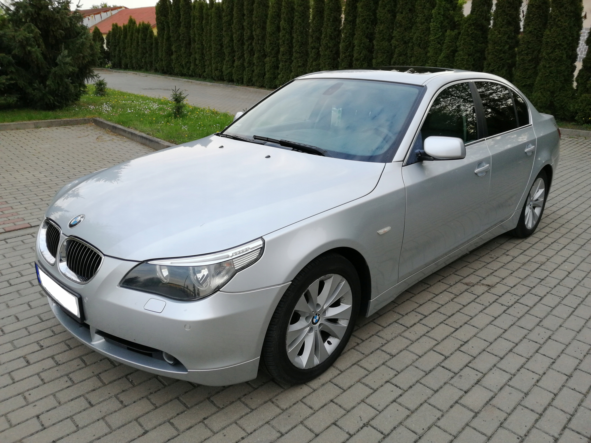

O samochodzie
Jestem BMW i jestem najlepszym samochodem dla 18 latak. Lubimy pluć olejem i go zjadać ale także lubi krzywić felgi od latania bokiem.
Za założyciela przedsiębiorstwa uznaje się Karla Rappa oraz Gustava Otto - syna wynalazcy silnika czterosuwowego Nikolausa Augusta Otto. W 1916 roku założyli oni Bayerische Flugzeug Werke (BFW) – Bawarską Fabryka Samolotów. Rok później nazwę zmieniono na Bayerische Motoren Werke (BMW) – Bawarska Fabryka Silników

Kontakt
Kontakt to SALONBMW.TDI.pl